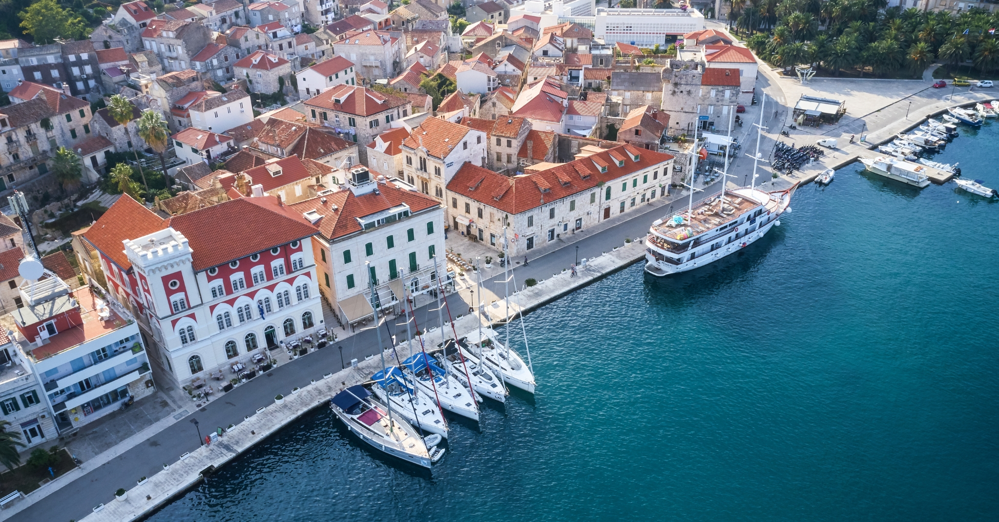
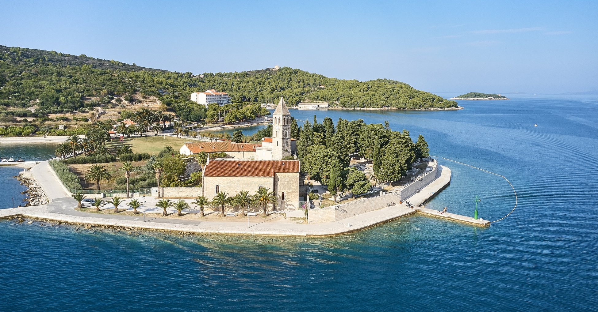

Ovo ostrvo je raj sa slikovitim gradovima koji
su se smestili u uvale, obiluje skrivenim pećinama i plažama, dok ga okružuje more koje varira u
svim nijansama plave boje.
Vis je idealna destinacija za istraživanje, uživanje u hrani i prihvatanje dalmatinskog ritma
života, polako i bez žurbe.
Ostrvo ima fascinantnu istoriju koja datira
unazad hiljadama godina.
Ostrvo je bilo naseljeno još u praistorijskim vremenima, a kroz istoriju je bilo pod vlašću
različitih civilizacija, uključujući Grke, Rimljane, Veneciju i Austro-Ugarsku.
Ova duga i raznolika istorija ostavila je
tragove širom ostrva, uključujući arheološka nalazišta, tvrđave, crkve i tradicionalne kamenite
kuće.
Ono što mnoge turiste privlači da posete ostrvo Vis jeste opuštena atmosfera i spokoj koji se oseća
na ostrvu.
Odsustvo masovnog turizma i očuvana priroda
čine ga idealnom destinacijom za odmor i beg od svakodnevnog stresa.


Sve što možete raditi na ostrvu Vis:
1. Istržite Titovu pećinu i bunker
Titova pećina i bunker na ostrvu Vis predstavljaju značajne vojne objekte koji svedoče o
turbulentnoj prošlosti ostrva.
Pećina je bila sklonište i operativna baza za Josipa Broza Tita, vođu Jugoslavije, tokom Drugog
svetskog rata.
Ova pećina je isklesana u stenovitu stranu brda, skrivena od pogleda sa vazduha, što ju je činilo
idealnim mestom za vojne operacije i skrivanje od neprijateljskih snaga.
U njoj se nalazio Titoov bunker, koji je bio opremljen za potrebe vođenja ratnih operacija i zaštite
visokih zvaničnika.
Istražite ove fascinantne vojne objekte i saznajte više o ulozi koju su imali tokom ratnih godina.
Titov bunker
2. Pogledajte film u bioskopu na otvorenom
Da li ste ikada bili u bioskopu na otvorenom tik uz obalu?
Ovaj jedinstveni bioskop na otvorenom nalazi se u malom selu Komiža i smešten je tik uz ivicu mora.
Bioskop radi još od 1964. godine i godinama prikazuje najnovije naslove na originalnom jeziku sa
hrvatskim titlovima.
Uzmite malo kokica iz mini bara i udobno se smestite dok zvuk vode udara o obalu.
3. Popnite se na vrh Hum
Kao jedno od najizolovanijih ostrva u srednjem delu Dalmacije, uspon na najviši vrh ostrva nagradiće
vas zadivljujućim pogledom na otvoreno more!
Na zapadnoj strani ostrva nalazi se staza za planinarenje koja vodi do impozantnog vrha Hum, s
pogledom na grad Komižu.
Najviši vrh planine Hum dostiže visinu od 587 metara nadmorske visine i pruža spektakularne poglede
na grad ispod sebe i ostrvo Biševo, poznato po čuvenoj Plavoj pećini!
4. Posetite Plavu pećinu
Plava pećina je jedna od najupečatljivijih prirodnih lepota u Dalmaciji.
Poznata je po svojoj jedinstvenoj plavoj svetlosti koja se stvara kada sunčeva svetlost prolazi kroz
vodu i osvetljava unutrašnjost pećine.
Ranije su pećinu mogli posetiti samo ronioci, ali je sada dostupna turistima kratkom vožnjom brodom,
koji mora da se nagne kako bi uplovio unutar pećine.
Nakon što prođete kroz uski ulaz, pećina se otvara u očaravajući potok plavog svetla.
Iako nije dozvoljeno plivanje unutar pećine, impresivne boje i svetla su jedan od onih fenomena koje
jednostavno treba videti da bi se poverovalo!
5. Zaplivajte u Zelenoj pećini
Iako nije toliko poznata kao čuvena Plava pećina, Zelena pećina na ostrvu Vis svakako je destinacija
koju ne treba zanemariti!
Ova prelepa pećina nalazi se na ostrvu Ravnik, nedaleko od Visa, i može se pristupiti kroz dva
prirodna otvora.
Unutar Zelene pećine dozvoljeno je plivanje, ronjenje, pa čak i skakanje sa njenog krova pravo u
more!
Najbolji barovi na Visu:
1. Lambik
2. Caffe bar Bejbi
3. Caffe bar Biliba
4. Corto Maltese Cocktail bar
Gde jesti na ostrvu Vis:
1. Konoba Bako
2. Konoba Kantun
3. Rokis
Posetite najlepše plaže na Visu:
1. Plaža Stiniva
2. Plaža Stončica
3. Srebrna plaža
4. Smokova
5. Zaglav plaža
Dubovica
Komiža
Grad Komiža, smešten na zapadnoj obali ostrva Visa, predstavlja jedno od najživopisnijih i
najzanimljivijih mesta na Jadranu.
Ovaj prelep grad ima bogatu istoriju i tradiciju ribarstva, koja seže unazad vekovima.
Ono što čini Komižu posebnom je njen šarmantni ambijent, tradicionalne drvene ribarske kuće, uske
kaldrmisane ulice i živopisna luka koja oživljava tokom celog dana.
Turisti koji posete Komižu imaju priliku da uživaju u predivnim prirodnim lepotama ovog grada.
Okolina Komiže obiluje spektakularnim plažama, tirkiznim vodama i skrivenim uvalama koje pružaju
savršeno mesto za opuštanje i uživanje u prirodi.
Pored toga, Komiža je poznata po svojim impresivnim planinama i pejzažima, koji nude brojne
mogućnosti za planinarenje, istraživanje i avanturu.
Uz to, Komiža je domaćin raznih kulturnih događaja, festivala i manifestacija tokom cele godine, što
doprinosi bogatom turističkom iskustvu posetilaca.
Bilo da uživate u lokalnoj kuhinji, istražujete istorijske spomenike ili jednostavno šetate obalom i
uživate u lepoti prirode, Komiža će vas očarati svojom autentičnom atmosferom i neodoljivim šarmom.



